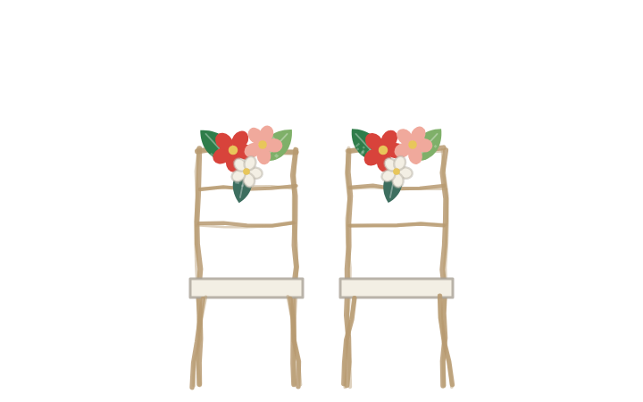

<meta charset="utf-8">
<meta name="viewport" content="width=device-width, initial-scale=1, viewport-fit=cover">
<title>진용·하림 참석 여부</title>
<meta name="claude:viewport-fit-sides" content="cover">
<link rel="preconnect" href="https://fonts.googleapis.com">
<link rel="preconnect" href="https://fonts.gstatic.com" crossorigin>
<link href="https://fonts.googleapis.com/css2?family=Archivo:wght@500&family=Noto+Sans+KR:wght@400;500&display=swap" rel="stylesheet">
<link rel="stylesheet" href="SectionKit.css">
<style>
  /* RSVP: laid out like the ceremony (tokens, title, choices, the field and the pill come from SectionKit.css).
     One question per row, its words side by side on the centre axis: no boxes, no numbers, no visible question labels. */

  .rsvp__form {
    margin: 0;
  }

  /* A fieldset only groups the words for assistive tech; it draws nothing on the paper. */
  .rsvp__row {
    min-width: 0;
    margin: 0;
    padding: 0;
    border: 0;
  }

  .rsvp__row + .rsvp__row,
  .rsvp__name,
  .rsvp__attending {
    margin-top: 18px;
  }

  .rsvp__attending .rsvp__row:first-child {
    margin-top: 0;
  }

  .rsvp__attending .rsvp__row + .rsvp__row {
    margin-top: 18px;
  }

  /* Two words of one question, side by side; the circle's padding keeps their marks apart. */
  .rsvp__options {
    display: flex;
    flex-wrap: wrap;
    justify-content: center;
    gap: 0 28px;
    font-size: 15px;
    letter-spacing: -0.01em;
  }

  /* An unanswered question: the pencil underline both words already carry turns red,
     instead of an error sentence. */
  .rsvp__row[data-missing] .choice__text {
    background-image: var(--crayon-underline-bloom);
  }

  .rsvp__name .field {
    font-family: var(--korean);
    letter-spacing: -0.01em;
    text-align: center;
  }

  /* Head count: a small soft label over the number at the big size between two bare signs. */
  .rsvp__guests {
    display: flex;
    flex-direction: column;
    align-items: center;
  }

  .rsvp__guests .label {
    line-height: 1.6;
  }

  .rsvp__stepper {
    display: inline-flex;
    align-items: center;
  }

  .rsvp__step {
    appearance: none;
    -webkit-appearance: none;
    min-width: 44px;
    min-height: 44px;
    margin: 0;
    padding: 0;
    border: 0;
    border-radius: 0;
    outline: none;
    color: var(--ink);
    background: transparent;
    font-family: var(--latin), var(--korean);
    font-size: clamp(22px, 6.6vw, 26px);
    line-height: 1;
    cursor: pointer;
    -webkit-tap-highlight-color: transparent;
  }

  .rsvp__step:focus-visible {
    color: var(--bloom);
  }

  .rsvp__step:disabled {
    color: var(--soft);
    opacity: 0.3;
    cursor: default;
  }

  .rsvp__count {
    min-width: 1.4em;
    text-align: center;
  }

  /* The send pill sits alone on the centre axis, below a wider gap than the rows. */
  .rsvp__send {
    margin: 40px 0 0;
  }

  /* Two classes, so the red wins over the kit's soft .section--detail .prose. */
  .rsvp .rsvp__error {
    margin-top: 8px;
    color: var(--bloom);
  }

  .rsvp__noscript {
    margin-top: 16px;
  }

  /* The sentence takes focus only so it is read out; it draws no focus box on the paper. */
  .rsvp__result {
    margin-top: 8px;
    outline: none;
  }
</style>

<section class="section section--detail rsvp" aria-label="참석 여부">
  
  <h2 class="section-title">참석 여부</h2>

  <!-- method and action keep a script-less submit from putting the name in the address bar;
       the send pill also stays disabled until the script is running. -->
  <form class="rsvp__form" data-rsvp method="post" action="#" novalidate>
    <fieldset class="rsvp__row" data-rsvp-row="side">
      <legend class="visually-hidden">어느 쪽 손님이신가요</legend>
      <div class="rsvp__options">
        <label class="choice"><input type="radio" name="side" value="groom"><span class="choice__text">신랑측</span></label>
        <label class="choice"><input type="radio" name="side" value="bride"><span class="choice__text">신부측</span></label>
      </div>
    </fieldset>

    <fieldset class="rsvp__row" data-rsvp-row="attendance">
      <legend class="visually-hidden">참석하시나요</legend>
      <div class="rsvp__options">
        <label class="choice"><input type="radio" name="attendance" value="attend"><span class="choice__text">참석해요</span></label>
        <label class="choice"><input type="radio" name="attendance" value="absent"><span class="choice__text">마음만 보내요</span></label>
      </div>
    </fieldset>

    <div class="rsvp__name">
      <label class="visually-hidden" for="rsvp-name">이름</label>
      <input class="field" id="rsvp-name" name="name" type="text" placeholder="이름" autocomplete="name" enterkeyhint="done">
    </div>

    <div class="rsvp__attending" data-when-attending hidden>
      <fieldset class="rsvp__row">
        <legend class="visually-hidden">함께 오시는 인원</legend>
        <div class="rsvp__guests">
          <span class="label" aria-hidden="true">인원</span>
          <span class="rsvp__stepper">
            <button class="rsvp__step" type="button" data-guests-minus aria-label="인원 줄이기">−</button>
            <output class="lead rsvp__count" data-guests-value aria-live="polite">1</output>
            <button class="rsvp__step" type="button" data-guests-plus aria-label="인원 늘리기">+</button>
          </span>
        </div>
      </fieldset>

      <fieldset class="rsvp__row" data-rsvp-row="meal">
        <legend class="visually-hidden">식사하시나요</legend>
        <div class="rsvp__options">
          <label class="choice"><input type="radio" name="meal" value="yes"><span class="choice__text">식사해요</span></label>
          <label class="choice"><input type="radio" name="meal" value="no"><span class="choice__text">식사 안 해요</span></label>
        </div>
      </fieldset>
    </div>

    <p class="rsvp__send">
      <button class="pill" type="submit" disabled>보내기</button>
    </p>
    <p class="prose rsvp__error" data-rsvp-error role="alert" hidden></p>
    <p class="visually-hidden" data-rsvp-hint aria-live="polite"></p>
  </form>

  <!-- No live role: the sentence is read out once, when it takes focus. -->
  <p class="prose rsvp__result" data-rsvp-result tabindex="-1" hidden></p>

  <noscript>
    <p class="prose rsvp__noscript">참석 여부는 전화나 메시지로 알려 주세요.</p>
  </noscript>

  <!-- Two chairs set aside for the guest: stays after sending, so it sits outside the form. -->
  
</section>

<script src="SectionKit.js"></script>
<script>
  // RSVP: shows head count and meal only to guests who attend, checks the answers,
  // then saves one row to a Google Sheet through an Apps Script web app (scripts/RsvpSheet.gs).
  (() => {
    // Paste the Apps Script web app URL here once it is deployed; empty means preview (no request).
    const RSVP_ENDPOINT = '';
    const DEVICE_ID_KEY = 'rsvpDeviceId';
    // Same limits as MIN_GUESTS / MAX_GUESTS in scripts/RsvpSheet.gs.
    const MIN_GUESTS = 1;
    const MAX_GUESTS = 9;
    const SEND_TIMEOUT_MS = 15000;
    const ANNOUNCE_DELAY_MS = 50;
    const SENT_TEXT = '전해졌어요. 고맙습니다.';
    const PREVIEW_TEXT = '시안이라 아직 저장되지는 않아요.';
    const ERROR_TEXT = '보내지 못했어요. 잠시 뒤 다시 눌러 주세요.';
    const HINT_TEXTS = {
      side: '신랑측인지 신부측인지 골라 주세요.',
      attendance: '참석하시는지 골라 주세요.',
      name: '이름을 적어 주세요.',
      meal: '식사하시는지 골라 주세요.',
    };
    const form = document.querySelector('form[data-rsvp]');

    if (!form) {
      return;
    }

    const section = form.closest('.rsvp') ?? document;
    const attendingGroup = form.querySelector('[data-when-attending]');
    const guestsValue = form.querySelector('[data-guests-value]');
    const minusButton = form.querySelector('[data-guests-minus]');
    const plusButton = form.querySelector('[data-guests-plus]');
    const nameInput = form.querySelector('input[name="name"]');
    const submitButton = form.querySelector('button[type="submit"]');
    const errorLine = form.querySelector('[data-rsvp-error]');
    const hintLine = form.querySelector('[data-rsvp-hint]');
    const result = section.querySelector('[data-rsvp-result]');
    let guests = MIN_GUESTS;
    let deviceId = '';
    let isSending = false;

    const getChoice = (name) => {
      const checked = form.querySelector(`input[name="${name}"]:checked`);

      return checked ? checked.value : '';
    };

    const createId = () => {
      if (window.crypto && typeof window.crypto.randomUUID === 'function') {
        return window.crypto.randomUUID();
      }

      return `${Date.now().toString(36)}-${Math.random().toString(36).slice(2, 10)}`;
    };

    // Same device and same name: the sheet overwrites that earlier row (see scripts/RsvpSheet.gs).
    // Storage may be blocked; the id is then kept for this page, so a resend still matches its row.
    const getDeviceId = () => {
      if (deviceId) {
        return deviceId;
      }

      try {
        const saved = window.localStorage.getItem(DEVICE_ID_KEY);

        if (saved) {
          deviceId = saved;

          return deviceId;
        }

        deviceId = createId();
        window.localStorage.setItem(DEVICE_ID_KEY, deviceId);
      } catch {
        deviceId = deviceId || createId();
      }

      return deviceId;
    };

    // Trimmed, inner runs of spaces folded to one: the name the sheet stores and matches on.
    const getName = () => {
      return nameInput ? nameInput.value.trim().replace(/\s+/g, ' ') : '';
    };

    const renderGuests = () => {
      if (guestsValue) {
        guestsValue.textContent = String(guests);
      }

      if (minusButton) {
        minusButton.disabled = guests <= MIN_GUESTS;
      }

      if (plusButton) {
        plusButton.disabled = guests >= MAX_GUESTS;
      }
    };

    const syncAttending = () => {
      if (attendingGroup) {
        attendingGroup.hidden = getChoice('attendance') !== 'attend';
      }
    };

    const setMissing = (name, isMissing) => {
      const row = form.querySelector(`[data-rsvp-row="${name}"]`);

      if (!row) {
        return;
      }

      row.toggleAttribute('data-missing', isMissing);
    };

    const handleChange = (event) => {
      const target = event.target;

      if (!(target instanceof HTMLInputElement) || target.type !== 'radio') {
        return;
      }

      setMissing(target.name, false);

      if (target.name === 'attendance') {
        syncAttending();
      }
    };

    const handleNameInput = () => {
      if (nameInput && nameInput.value.trim() !== '') {
        nameInput.removeAttribute('aria-invalid');
      }
    };

    const handleMinusClick = () => {
      guests = Math.max(MIN_GUESTS, guests - 1);
      renderGuests();
    };

    const handlePlusClick = () => {
      guests = Math.min(MAX_GUESTS, guests + 1);
      renderGuests();
    };

    // Marks every unanswered question at once and returns the first element to focus, or null.
    const findProblem = () => {
      const missingSide = getChoice('side') === '';
      const missingAttendance = getChoice('attendance') === '';
      const missingName = getName() === '';
      const missingMeal = getChoice('attendance') === 'attend' && getChoice('meal') === '';
      const problems = [];

      setMissing('side', missingSide);
      setMissing('attendance', missingAttendance);
      setMissing('meal', missingMeal);

      if (nameInput && missingName) {
        nameInput.setAttribute('aria-invalid', 'true');
      }

      if (missingSide) {
        problems.push({ key: 'side', element: form.querySelector('input[name="side"]') });
      }

      if (missingAttendance) {
        problems.push({ key: 'attendance', element: form.querySelector('input[name="attendance"]') });
      }

      if (missingName) {
        problems.push({ key: 'name', element: nameInput });
      }

      if (missingMeal) {
        problems.push({ key: 'meal', element: form.querySelector('input[name="meal"]') });
      }

      if (hintLine) {
        hintLine.textContent = problems.map((problem) => HINT_TEXTS[problem.key]).join(' ');
      }

      return problems.length ? problems[0].element : null;
    };

    const buildPayload = () => {
      const isAttending = getChoice('attendance') === 'attend';

      return {
        deviceId: getDeviceId(),
        side: getChoice('side'),
        attendance: getChoice('attendance'),
        name: getName(),
        guests: isAttending ? guests : 0,
        meal: isAttending ? getChoice('meal') : '',
        sentAt: new Date().toISOString(),
      };
    };

    const showResult = (text) => {
      form.hidden = true;

      if (!result) {
        return;
      }

      result.textContent = text;
      result.hidden = false;
      result.focus({ preventScroll: true });
    };

    // Cleared first so the same sentence is read out again on a second failure.
    const showError = () => {
      if (!errorLine) {
        return;
      }

      errorLine.textContent = '';
      errorLine.hidden = false;
      setTimeout(() => {
        errorLine.textContent = ERROR_TEXT;
      }, ANNOUNCE_DELAY_MS);
    };

    // Apps Script cannot answer a CORS preflight, so the JSON goes as text/plain (a simple request).
    // A stalled connection is cut after SEND_TIMEOUT_MS so the guest can try again.
    const send = async (payload) => {
      const controller = typeof AbortController === 'function' ? new AbortController() : null;
      const timer = controller ? setTimeout(() => controller.abort(), SEND_TIMEOUT_MS) : 0;

      try {
        const response = await fetch(RSVP_ENDPOINT, {
          method: 'POST',
          headers: { 'Content-Type': 'text/plain;charset=utf-8' },
          body: JSON.stringify(payload),
          signal: controller ? controller.signal : undefined,
        });

        if (!response.ok) {
          throw new Error(`RSVP request failed: ${response.status}`);
        }

        // Apps Script answers 200 even when it could not write, so the body says whether it did.
        const body = await response.json();

        if (!body || body.ok !== true) {
          throw new Error('RSVP was not saved');
        }
      } finally {
        clearTimeout(timer);
      }
    };

    const handleSubmit = async (event) => {
      event.preventDefault();

      if (isSending) {
        return;
      }

      const problem = findProblem();

      if (problem) {
        problem.focus();

        return;
      }

      const payload = buildPayload();

      if (!RSVP_ENDPOINT) {
        showResult(PREVIEW_TEXT);

        return;
      }

      if (errorLine) {
        errorLine.hidden = true;
      }

      isSending = true;

      if (submitButton) {
        submitButton.disabled = true;
      }

      try {
        await send(payload);
        showResult(SENT_TEXT);
      } catch {
        showError();
      } finally {
        isSending = false;

        if (submitButton) {
          submitButton.disabled = false;
        }
      }
    };

    form.addEventListener('change', handleChange);
    form.addEventListener('submit', handleSubmit);

    if (nameInput) {
      nameInput.addEventListener('input', handleNameInput);
    }

    if (minusButton) {
      minusButton.addEventListener('click', handleMinusClick);
    }

    if (plusButton) {
      plusButton.addEventListener('click', handlePlusClick);
    }

    renderGuests();
    syncAttending();

    // A guest link (?to=<name>) fills in the name; the guest can still change it.
    const guestName = window.InvitationKit?.getGuestName() ?? '';

    if (nameInput && guestName && !nameInput.value) {
      nameInput.value = guestName;
    }

    // The send pill ships disabled so a page without script cannot submit the form.
    if (submitButton) {
      submitButton.disabled = false;
    }
  })();
</script>
